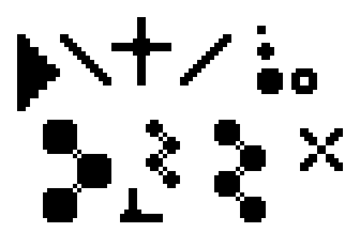
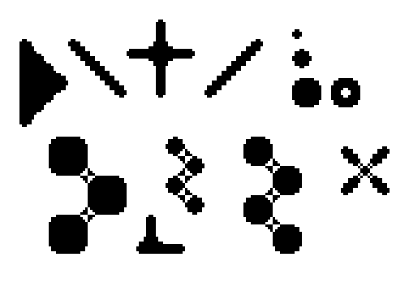

Scale2x Algorithm
The effect works repeating a computation pattern for every pixel of the original image. The pattern starts from a square of 9 pixels and expands the central pixel computing 4 new pixels.
Starting from this pattern :
| A | B | C |
| D | E | F |
| G | H | I |
The central pixel E is expanded in 4 new pixels:
| E0 | E1 |
| E2 | E3 |
with these rules (in C language) :
E0 = D == B && B != F && D != H ? D : E; E1 = B == F && B != D && F != H ? F : E; E2 = D == H && D != B && H != F ? D : E; E3 = H == F && D != H && B != F ? F : E;
which can be rewritten as :
E0 = D == B && B != H && D != F ? D : E; E1 = B == F && B != H && D != F ? F : E; E2 = D == H && B != H && D != F ? D : E; E3 = H == F && B != H && D != F ? F : E;
and optimized as:
if (B != H && D != F) {
E0 = D == B ? D : E;
E1 = B == F ? F : E;
E2 = D == H ? D : E;
E3 = H == F ? F : E;
} else {
E0 = E;
E1 = E;
E2 = E;
E3 = E;
}
The image border is computed reusing the value of the nearest pixel on the border when the value of a pixel over the border is required.
Scale3x Algorithm
Starting from this pattern :
| A | B | C |
| D | E | F |
| G | H | I |
The central pixel E is expanded in 9 new pixels:
| E0 | E1 | E2 |
| E3 | E4 | E5 |
| E6 | E7 | E8 |
with these rules (in C language) :
E0 = D == B && B != F && D != H ? D : E; E1 = (D == B && B != F && D != H && E != C) || (B == F && B != D && F != H && E != A) ? B : E; E2 = B == F && B != D && F != H ? F : E; E3 = (D == B && B != F && D != H && E != G) || (D == H && D != B && H != F && E != A) ? D : E; E4 = E E5 = (B == F && B != D && F != H && E != I) || (H == F && D != H && B != F && E != C) ? F : E; E6 = D == H && D != B && H != F ? D : E; E7 = (D == H && D != B && H != F && E != I) || (H == F && D != H && B != F && E != G) ? H : E; E8 = H == F && D != H && B != F ? F : E;
and optimized as:
if (B != H && D != F) {
E0 = D == B ? D : E;
E1 = (D == B && E != C) || (B == F && E != A) ? B : E;
E2 = B == F ? F : E;
E3 = (D == B && E != G) || (D == H && E != A) ? D : E;
E4 = E;
E5 = (B == F && E != I) || (H == F && E != C) ? F : E;
E6 = D == H ? D : E;
E7 = (D == H && E != I) || (H == F && E != G) ? H : E;
E8 = H == F ? F : E;
} else {
E0 = E;
E1 = E;
E2 = E;
E3 = E;
E4 = E;
E5 = E;
E6 = E;
E7 = E;
E8 = E;
}
Scale4x Algorithm
The Scale4x effect is simply the Scale2x effect applied two times.
Examples
The following are some examples that show the application of the effects.
 original |
|  scale2x |
 scale3x |
|  scale4x |